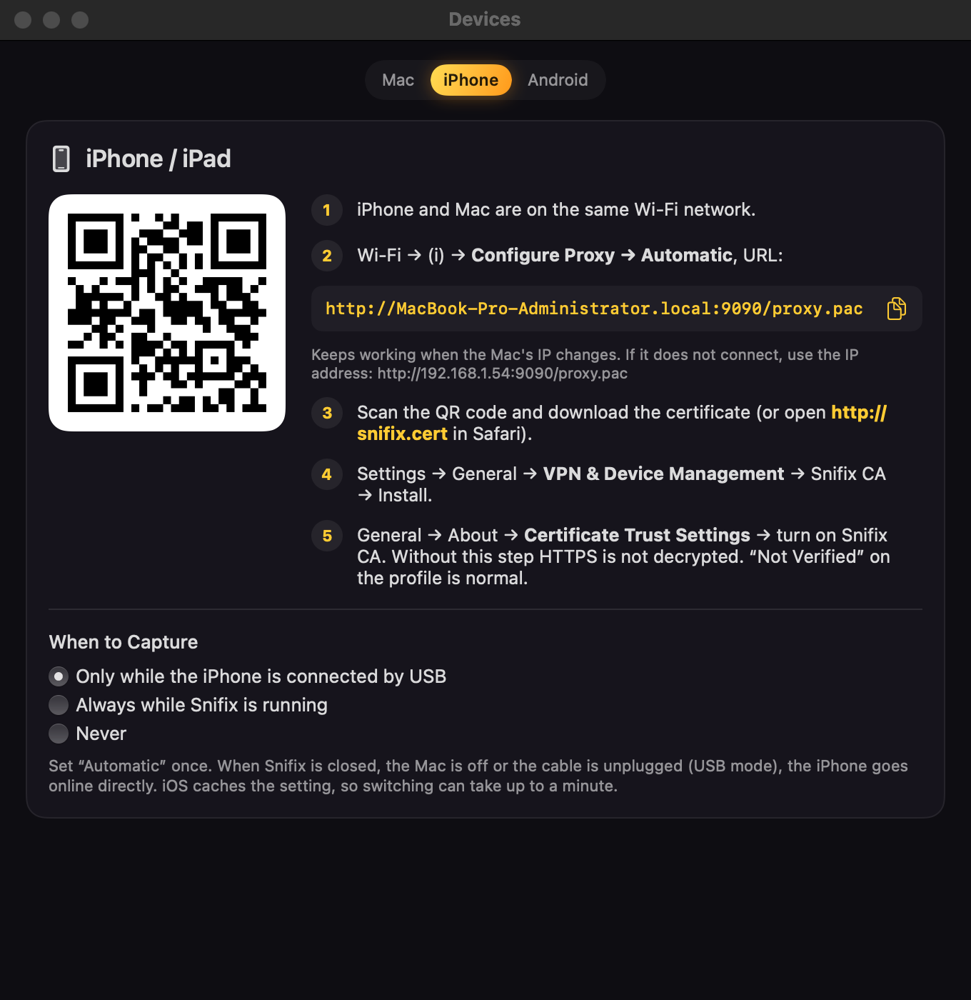
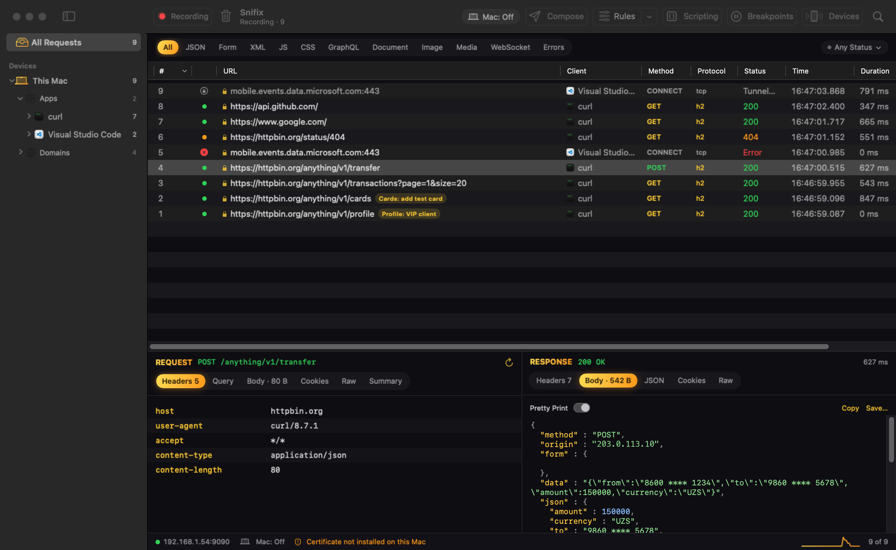
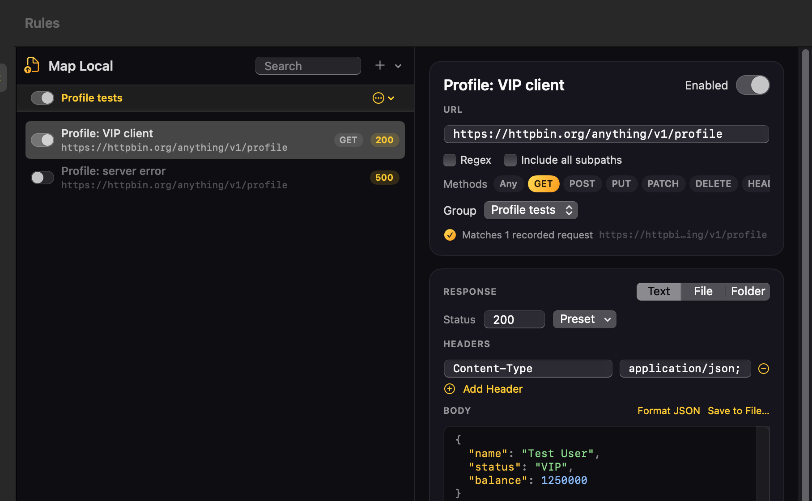
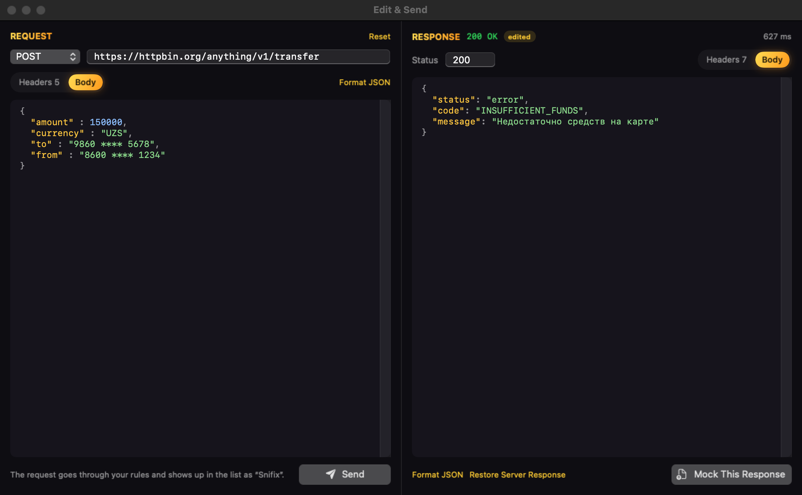
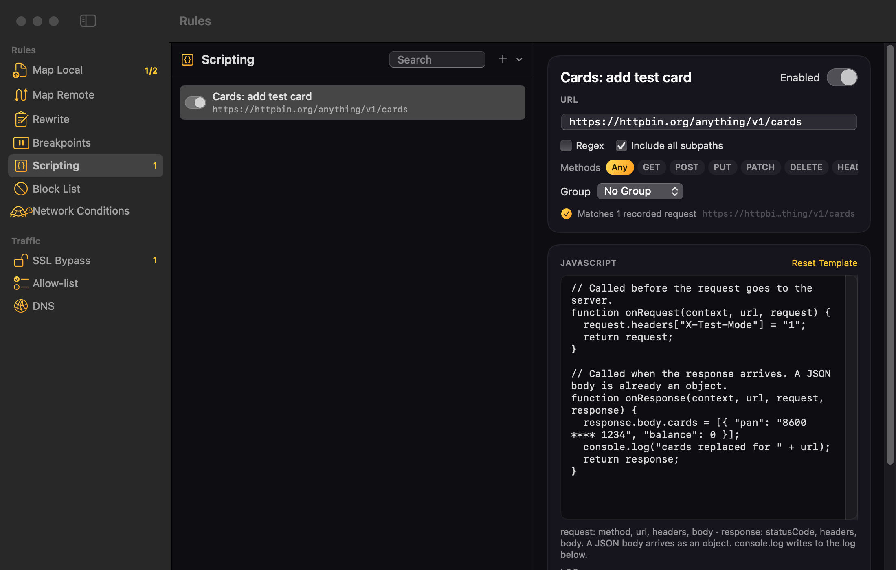

Пошаговая инструкция: как смотреть запросы приложения на iPhone, подменять ответы сервера и менять их скриптами.
1Настройка Mac и iPhone
2Главное окно
3Map Local — подмена ответа
4Edit & Send — изменить запрос и ответ
5Scripting — скрипты
6Если что-то не работает
Кнопки и надписи в программе — на английском, в инструкции они выделены так: Mock This Response.
Шаг 1
Настройка Mac и iPhone
Делается один раз. Snifix работает на Mac, а iPhone отправляет свои запросы через него. На iPhone ничего устанавливать не нужно, кроме сертификата.
На Mac
Откройте Snifix. Вверху меню выберите Certificate → Install on This Mac… и введите пароль Mac.
Нажмите кнопку Mac: Off на панели сверху. Она станет жёлтой — Mac: On: теперь трафик Mac тоже виден в Snifix. Для работы только с iPhone этот шаг можно пропустить.
На iPhone
Нажмите Devices на панели сверху и выберите вкладку iPhone. Там те же шаги и ваш личный адрес:

iPhone и Mac подключены к одной и той же Wi-Fi сети.
На iPhone: Настройки → Wi-Fi → (i) у вашей сети → Прокси → Авто. В поле URL вставьте адрес из окна Devices (кнопка копирования справа от адреса).
Откройте камеру и наведите на QR-код в окне Devices, нажмите на ссылку и скачайте сертификат. Или откройте в Safari адрес http://snifix.cert.
Настройки → Основные → VPN и управление устройством → Snifix CA → Установить.
Настройки → Основные → Об этом устройстве → Доверие сертификатам → включите Snifix CA.
Важно про шаг 5Без него Snifix видит только адреса, но не содержимое запросов. Надпись «Не проверено» у профиля на шаге 4 — это нормально.
Когда идёт перехватПо умолчанию трафик iPhone идёт через Snifix, только пока iPhone подключён к Mac кабелем. Отключили кабель — iPhone ходит в интернет как обычно. Это меняется в окне Devices → When to Capture.
Шаг 2
Главное окно
Каждая строка — один запрос: что приложение отправило и что ответил сервер.

123456
1Устройства. Нажмите на устройство — увидите только его запросы. Внутри: приложения и домены. Правый клик — переименовать, сменить иконку, закрепить.
4Request — что отправило приложение: заголовки, параметры, тело.
2Список запросов. Зелёная точка — успешно, оранжевая — ошибка 4xx, красная — 5xx или сбой, замок — запрос не расшифрован.
5Response — что ответил сервер. Вкладка JSON показывает ответ деревом.
3Жёлтая метка — к запросу применилось правило (например, Map Local). Видно, какое именно.
6Кнопки сверху, слева направо:Mac: On/Off — показывать ли запросы самого Mac (жёлтая — включено) · Compose — новый запрос вручную · Rules — все правила: Map Local, Map Remote, Rewrite и другие · Scripting — скрипты · Breakpoints — остановленные запросы · Devices — подключение iPhone и Android.
Полезно знать
Двойной клик по запросу открывает окно Edit & Send (шаг 4). Правый клик по запросу — копировать URL или cURL, повторить запрос, создать правило.
Фильтры над списком: JSON, Errors и другие, справа — фильтр по коду ответа Any Status. Поиск — значок лупы в правом верхнем углу.
Recording слева вверху ставит запись на паузу, корзина рядом очищает список.
Шаг 3
Map Local — подмена ответа
Приложение получает ответ, который написали вы, а не настоящий ответ сервера. Так можно проверить, как приложение покажет VIP-клиента, пустой список, ошибку 500 и что угодно ещё — без помощи бэкенда.
Самый быстрый способ — из готового запроса
Найдите в списке нужный запрос (например, профиль).
Нажмите на него правой кнопкой → Map Local (Mock Response)…
Откроется окно правил. Ответ сервера уже скопирован в правило — остаётся поменять нужные поля.
Повторите действие в приложении (обновите экран). В списке у запроса появится жёлтая метка с именем правила.
Copy URL
Copy as cURL
Copy Response Body
Repeat
Edit & Send…
Script for This Request…
Map Local (Mock Response)…
Create Rule ▸
Pin Domain

123456789
1+ — новое правило. Стрелка рядом: новая группа, импорт и экспорт правил.
6Откуда брать ответ: Text — написать прямо здесь, File — из файла, Folder — из папки с моками.
2Группа. Переключатель включает или выключает все правила группы сразу.
3Правило. Переключатель слева — включить или выключить только его.
8Body — тело ответа. Format JSON выравнивает JSON.
4URL — для какого адреса подменять. Звёздочка * заменяет любой текст.
9Enabled — тот же переключатель, что и в списке.
5Methods — только GET, только POST или Any (любой).
Много моковСделайте отдельные правила для разных сценариев («VIP клиент», «Ошибка 500», «Пустой список») и сложите их в группу. Включайте одно — остальные выключены. Если в списке под адресом написано Matches 1 recorded request, адрес указан правильно.
Шаг 4
Edit & Send — изменить запрос и ответ
Откройте двойным кликом любой запрос из списка. Слева — запрос, справа — ответ сервера. Менять можно оба.

1234567
1Метод и адрес запроса — можно поменять.
5Тело ответа — меняйте как обычный текст.
2Вкладки Headers и Body — заголовки и тело запроса.
6Метка edited — ответ изменён вами.
3Send (или ⌘↩) — отправить. Ответ сервера появится справа.
7Mock This Response — приложение начнёт получать этот ответ.
4Status — код ответа, например 500.
Проверить, что будет, если сервер ответит иначе
Двойной клик по запросу (например, перевод денег).
Справа поменяйте ответ: например, напишите ошибку «Недостаточно средств» или поставьте Status 500.
Нажмите Mock This Response. Внизу появится подсказка «The app now receives this response».
Повторите действие в приложении на iPhone — оно получит ваш ответ.
Чтобы вернуть настоящий сервер, нажмите Stop Mocking. Кнопка Restore Server Response возвращает исходный текст ответа в окне.
Как это устроеноMock This Response создаёт обычное правило Map Local. Его можно найти и поправить позже в Rules → Map Local.
Шаг 5
Scripting — скрипты
Когда нужно не заменить ответ целиком, а поменять одно поле, добавить заголовок или сделать что-то по условию. Скрипт пишется на JavaScript и срабатывает сам на каждый подходящий запрос.

123456
1Scripting в окне правил (кнопка Scripting наверху).
4onRequest — меняет запрос до отправки на сервер.
2+ — новый скрипт. Или правый клик по запросу → Script for This Request…
5onResponse — меняет ответ до того, как его получит приложение.
3URL — к каким адресам применять скрипт.
6Сколько записанных запросов подходит под адрес.
Скрипт сохраняется сам, отдельной кнопки нет. Под редактором есть Log: туда пишет console.log(...) и туда же попадают ошибки скрипта.
Шаг 5 · продолжение
Готовые примеры скриптов
Создайте скрипт (кнопка + в Scripting), укажите URL и замените текст в редакторе одним из примеров.
Подменить ответ только для конкретного запроса (например, при определённом параметре):
function onResponse(context, url, request, response) {
if (url.includes("page=2")) {
response.body.items = []; // вторая страница пустая
}
return response;
}
Главное правилоФункция всегда должна заканчиваться строкой return request; или return response;. Если JSON-ответ — объект, обращайтесь к полям через точку: response.body.name.
Шаг 6
Если что-то не работает
С iPhone не приходит ни одного запроса
Проверьте, что iPhone и Mac в одной Wi-Fi сети, а в настройках Wi-Fi iPhone прокси стоит «Авто» с адресом из окна Devices. В режиме по умолчанию iPhone должен быть подключён к Mac кабелем.
Жёлтая плашка «does not trust the Snifix certificate»
На iPhone не включено Доверие сертификатам → Snifix CA (шаг 1, пункт 5). Включите и нажмите в плашке Retry.
Запрос показан как Tunnel without decryption
Содержимое этого запроса не расшифровано. Так всегда бывает с сервисами Apple — это нормально. Если так с вашим приложением, а у Safari запросы видны, значит в приложении стоит защита от перехвата (пиннинг). Нужна тестовая сборка без неё — попросите разработчиков.
Правило Map Local не срабатывает
Проверьте, что включены и правило, и его группа, адрес совпадает (под адресом должно быть Matches … recorded request) и выбран правильный метод. Обновите экран в приложении.
Нужно вернуть всё как было
Выключите правила или нажмите Stop Mocking. Если закрыть Snifix, iPhone и Mac сразу ходят в интернет напрямую.
Пропал интернет на Android после отключения кабеля
Подключите кабель обратно и нажмите в Devices → Android Disconnect. В следующий раз нажимайте его до того, как вынуть кабель.
Осторожно с реальными даннымиВ перехваченных запросах видны токены, номера карт и личные данные. Тестируйте на тестовых аккаунтах и не пересылайте сохранённые сессии с боевыми данными.